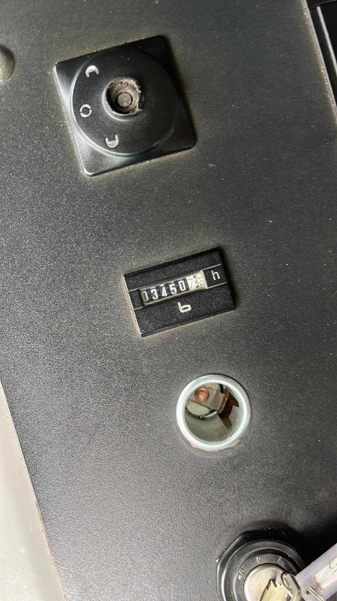

Salida Patio GSP
Waypoints Telemetría GPS
Punto Carga Copec
Arribo a Faena Cliente
📋 Bitácora Cronológica de Ruta
Token: vj-12-59-8a3f
1. Salida de Patio (Base Central Temuco) 🔍
08:10 hrs
Odómetro Inicial: 48.120,0 KM
Horómetro Inicial: 4.310,0 HRS
🔐 Firma OTP Conductor Validada (SHA-256)
📸 Evidencia Tablero Salida (PWA):

2. Control en Ruta 5 Sur & Combustible 🔍
08:32 hrs
Punto Control: Estación Copec Ruta 5 Sur Km 668
Telemetría: Velocidad Crucero 58 km/h • Sin Alertas
Estado Estanque: 100% Lleno (Grúa y Chasis)
3. Arribo a Faena (Planta Ferrero — Tensacon) 🔍
08:54 hrs
Odómetro Arribo: 48.148,4 KM (+28,4 KM)
Horómetro Arribo: 4.311,5 HRS (+1,5 HRS)
Obs: "Arribo a faena verificado con éxito. Posicionamiento para AST."
📸 Evidencia Tablero Arribo a Faena:
